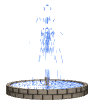

Juan 7:38
Aquí está nuestra colección de Doctrina Bíblica para la misión de San Pedro Sula. Las hemos compuesto en español. Si desea leer estas y otras lecciones en inglés, haga clic aquí.
Si tiene alguna pregunta o desea comunicarse con el hermano Blanchard, por favor envíe un correo electrónico. Dios te bendiga mientras estudias su Palabra.